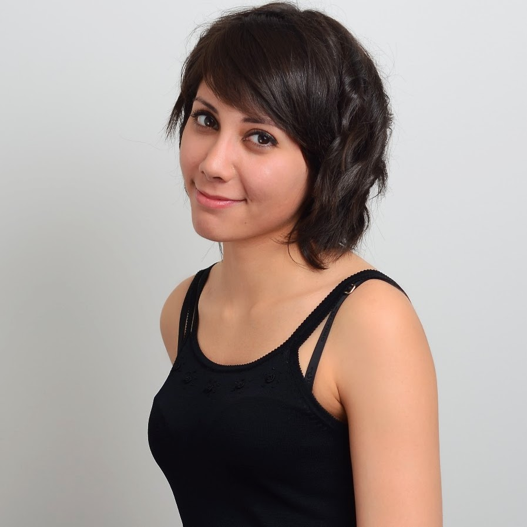
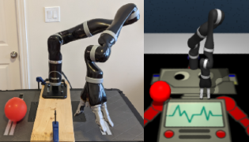
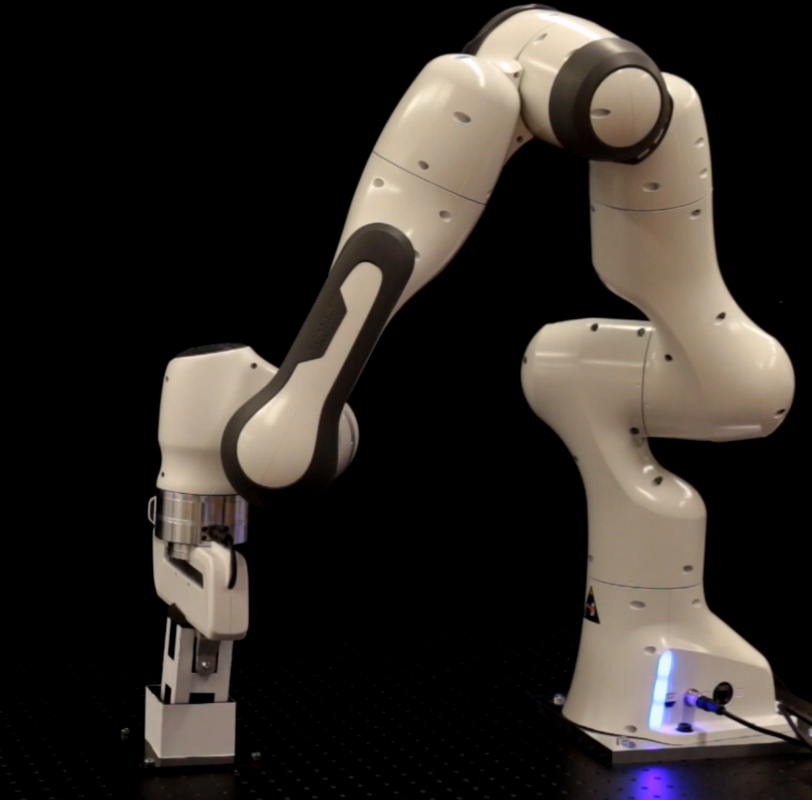
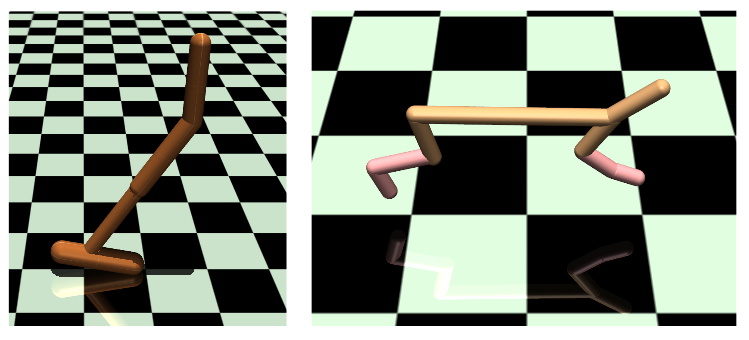
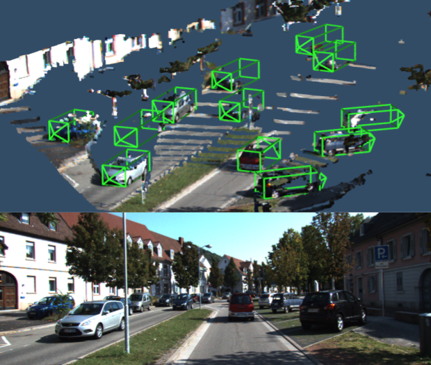

I am a PhD candidate at Mila and McGill University, where I am co-advised by Prof. David Meger and Prof. Joelle Pineau. I was previously part of the Autonomous Vehicles Lab at the Department of Mechanical and Mechatronics Engineering at the Univeristy of Waterloo supervised by Prof. Steven Waslander.
I'm interested in designing learning algorithms for robotics applications. My work over the past year has focused on reinforcement learning, especially related to transfer learning in the context of Sim2Real and imitation learning.
Contact : melissafm24 at gmail dot com
[CV] [GitHub] [Google Scholar]
Education
-
PhD in Computer Science, 2020-Present
McGill Univeristy
-
MASc in Mechanical and Mechatronics Engineering, 2018
University of Waterloo
-
BSc in Computer Science, 2014
University of St Andrews
Publications
|  |
Intervention Design for Effective Sim2Real Transfer Melissa Mozifian, Amy Zhang, Joelle Pineau, and David Meger Under submission |
|  |
Shaping Rewards for Combined Reinforcement and Imitation Learning using Generative Models Yuchen Wu, Melissa Mozifian, Florian Shkurti International Conference on Computer Vision on Robotics and Automation (ICRA), 2021 |
|  |
Learning Domain Randomization Distributions for Training Robust Locomotion Policies Melissa Mozifian*, Juan Camilo Gamboa Higuera*, David Meger, Gregory Dudek International Conference on Intelligent Robots and Systems (IROS), 2020 Multi-Task and Lifelong Reinforcement Learning Workshop (ICML), 2019 |
|  |
Joint 3D Proposal Generation and Object Detection from
View Aggregation
Jason Ku, Melissa Mozifian, Ali Harakeh, Jungwook Lee, Steven Waslander
International Conference on Intelligent Robots and Systems (IROS), 2018
|

|
Deep Learning a Quadrotor Dynamic Model for Multi-Step Prediction
Nima Mohajerin, Melissa Mozifian and Steven Waslander
International Conference on Computer Vision on Robotics and Automation (ICRA), 2018
Quadrotor Dataset
/
Bibtex
|
Past Projects
-
Real-time 3D Object Detection for Autonomous
Driving (2018)
Master thesis.
AVOD-SSD
Code
- Autonomoose (2017)
Worked on deploying our 3D object detector, AVOD, with ROS integration on our self-driving car. See video
- Neural Network based EKF Localization (2017)
Object-based localization method with neural networks using YOLO (real-time object detector) to localize objects in the camera frame. Using these detected objects as features, an Extended Kalman Filter was used to estimate the robot pose. See video
- Modelling
Quadrotor Dynamics Using Neural Networks (2017)
Using deep recurrent neural network architecture to model quadrotor dynamics with autoencoders as a pre-training technique.
- Kaggle Seizure Prediction
Challenge (2016)
Electrical brain activity (EEG) based seizure forecasting systems using machine learning methods. See the challenge
- Affective
Mirror (BSc Dissertation - 2014)
The goal of this project was to develop a system with the ability to detect emotions such as happiness, sadness, surprise and excitement by analysing the facial cues using SVMs. See video
- Webcam-based Pulse Detector (2013)
This application uses OpenCV to detect the user's face to isolate the forehead region. Data is collected from this region over time to estimate the user's heart rate by measuring average optical intensity in the forehead location. Physiological data can be estimated this way due to the optical absorption characteristics of (oxy-) haemoglobin See Plethysmographic imaging
- Idris, A Dependently Typed Functional
Programming Language (2012)
I contributed to Idris, a general-purpose functional programming language with dependent types. I implemented a Secure SQL Query system Using Dependent Types.